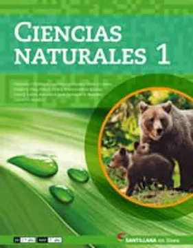
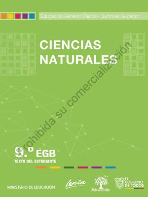
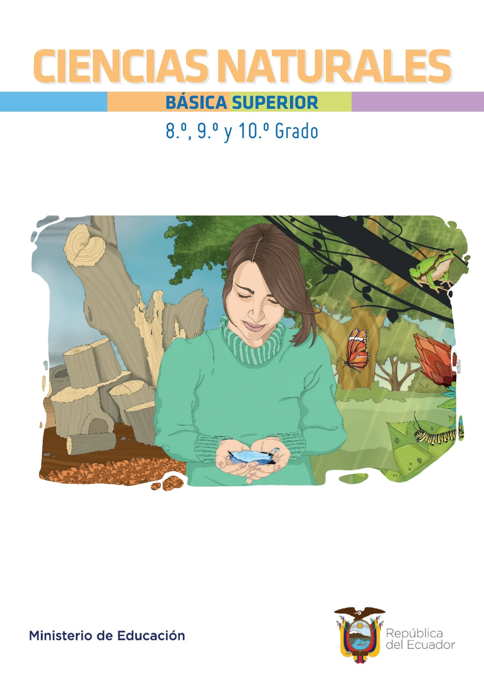
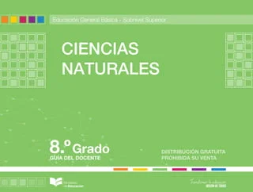

Ciencias Naturales
Ciencias Naturales I
Autor: Silvia Armani, Adriana Cacciavillani, Cristina Zamorano, Alejandra Acevedo

Ciencias Naturales
Ciencias Naturales 9. Texto del Estudiante
Autor: Ana Cristina Villalba Batallas

Ciencias Naturales
Ciencias Naturales Básica Superior. 8.º, 9.º y 10.º Grado
Autor: Byron Patricio Villarreal Ramírez, Freddy Tituaña, Andrea Paola Zárate Oviedo

Ciencias Naturales
Ciencias Naturales. Material de Apoyo, Octavo Grado
Autor: USAID
